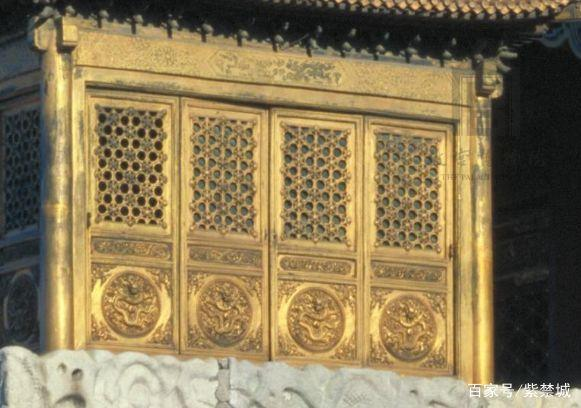
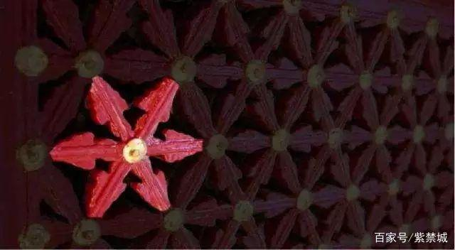
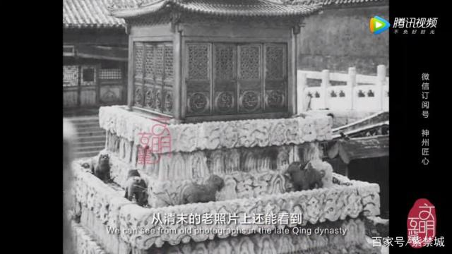

你猜，故宫的建筑在哪里？
多次驻足乾清宫的你，是否注意到大殿东西两侧，文石堆砌的石台之上，安放着两座通体鎏金的小亭子？

虽然外观似亭，但它们的官方名字却是“江山社稷金殿”，东边叫做江山金殿，西边则是社稷金殿。而它们，就是我们今天要找的，故宫里最小的建筑。石台下面还设有汉白玉栏杆，每个栏杆又有十二个柱头，雕刻着精美的狮子。
三层文石台上雕刻着海水江崖的图案，叠加起来就仿佛水浪往上翻滚，而金殿就好似从水中升起的仙阁一般。虽然建筑面积小，但结构上丝毫不肯马虎。重檐攒尖顶的式样，一圆一方，象征天圆地方。
其下的细节雕刻亦精致非常，四面的三交六椀菱花格扇的门扇，裙摆上还有龙纹图案。
这三交六椀菱花，是清代宫殿建筑门窗槅心花纹装饰之一。
三根棂子交叉相接，相交点以竹或木钉固定装饰成花心。正交法各夹角均为60度，斜交法中线偏30度相交，可以组成圆形、菱形、三角形等多种图案，形式丰富，是古建筑外檐装修中的高等级形式。
金殿的斗拱与脊兽，同样雕刻精细，通体鎏金，金光灿烂。

从清末的老照片中，我们还能看到第一层文石台上，曾摆放过可能是青铜铸造的镇兽。自打顺治十三年，江山社稷金殿在此设置后，每天都会有太监前往第一级文石台，打开格扇门，在殿内供奉香烛，这个规矩一直延续到了民国溥仪在位时期，几乎贯穿整个清朝历史。
此外，每月初一、十五天未亮，领侍卫大臣还会率御前侍卫和乾清宫侍卫来此祭拜，另这里一直香火不断。
皇帝之所以将这样一座金殿放在正宫“乾清宫”前，不单是因为江山社稷代表着国家，更是要时刻提醒自己，将国家放在心上。